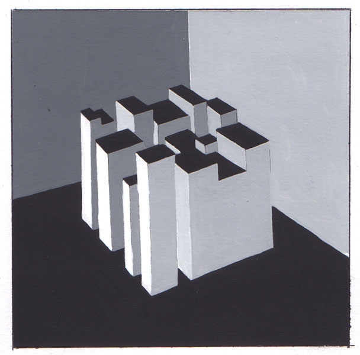

Задача: При помощи несложной конструкции из легких материалов с окраской создать наружную (уличную) рекламу различных культурных мероприятий (зрелищ, конференций, спортивных выступлений и т.д.)
Авторы работ: Бушук Е., Приболовец С., Машкарова Ю., Пучкова М., Уралова Т., Бышкина И., Шейко Е., Горбачевская А.
Просмотр 31 января 2005
Куб (система К-Ч-Б)

Куб (разрушение формы)
Куб (выявление каракаса)
Куб (ахроматическая гамма)
Куб (монохромия, К-Ч-Б)
Натюрморт
Натюрморт (полярная композиция)
Натюрморт (полухроматическая композиция)
«—» (полярная композиция)
«—» (многоцветие)
Конус (полярная композиция)
"-" (трехцветие)
"-" (ахроматическая композиция)